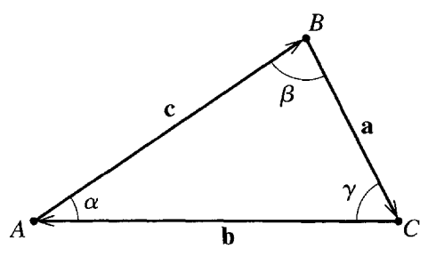

Homework 1 (Due 24 Jan)#
Due January 24 (midnight)
Date: Jan 8, 2024 Total points: 100.
Practicalities about homeworks and projects
You can work in groups (optimal groups are often 2-3 people) or by yourself. If you work as a group you can hand in one answer only if you wish. Remember to write your name(s)!
Homeworks are available approximately ten days before the deadline. You should anticipate this work.
How do I(we) hand in? You can hand in the paper and pencil exercises as a single scanned PDF document. For this homework this applies to exercises 1-5. Your jupyter notebook file should be converted to a PDF file, attached to the same PDF file as for the pencil and paper exercises. All files should be uploaded to Gradescope.
Instructions for submitting to Gradescope.
Exercise 1 (15 pt), math reminder, properties of exponential function#
The first exercise is meant to remind ourselves about properties of the exponential function and imaginary numbers. This is highly relevant later in this course when we start analyzing oscillatory motion and some wave mechanics. The discovery relating trigonometric functions and exponential functions is attributed to Leonhard Euler (1707-1783). There’s two great books on the development formula, its importance to math and science, its applications:
As physicists we should feel comfortable with expressions that include \(\exp{(\imath \omega t)}\) and \(\exp{(\imath 2\pi f t)}\). Here \(t\) could be interpreted as time and \(\omega\)/\(f\) as a frequency. We know that \(\imath = \sqrt(-1)\) is the imaginary unit number.
1a (4pt): Perform Taylor expansions in powers of \(2\pi f t\) of the functions \(\cos{(2\pi f t)}\) and \(\sin{(2\pi f t)}\). Show your work in producing those Taylor expansions.
1b (3pt): Perform a Taylor expansion of \(\exp{(i2\pi f t)}\). Show your work in producing those Taylor expansions.
1c (2pt): Using parts (a) and (b) here, show that \(\exp{(\imath2\pi f t)}=\cos{(2\pi f t)}+\imath\sin{(2\pi f t)}\).
1d (2pt): Show that \(\ln{(-1)} = \imath\pi\).
1e (4pt): Develop another novel mathematical relationship based on the properties you’ve discovered in this problem. Explain how your result connects to any of the results parts a-d.
Exercise 2 (15 pt), Vector algebra#
As we have quickly realized, forces and motion in three dimensions are best described using vectors. Here we perform some elementary vector algebra that we wil need to have as tacit knowledge for the rest of the course. These operations are not typically taken with specific numbers, but rather with vectors in general. When we need to, we use the notation \(\boldsymbol{a}=(a_x,a_y,a_z)\) for vectors in three dimensions. To get us started the first two questions below include numerical values, but the third question expects you to use the general notation.
2a (4pt) One of the many uses of the scalar product is to find the angle between two given vectors. Find the angle between the vectors \(\boldsymbol{a}=(1,3,9)\) and \(\boldsymbol{b}=(9,3,1)\) by evaluating their scalar product.
2b (5pt) For a cube with sides of length 1, one vertex at the origin, and sides along the \(x\), \(y\), and \(z\) axes, the vector of the body diagonal from the origin can be written \(\boldsymbol{a}=(1, 1, 1)\) and the vector of the face diagonal in the \(xy\) plane from the origin is \(\boldsymbol{b}=(1,1,0)\). Find first the lengths of the body diagonal and the face diagonal. Use then part (2a) to find the angle between the body diagonal and the face diagonal. Make sure to include a sketch of your cube, the relevant vectors, and the angle you find.
2c (6pt) Consider two arbitrary vectors in three dimensions, \(\boldsymbol{a}=(a_x, a_y, a_z)\) and \(\boldsymbol{b}=(b_x, b_y, b_z)\). Prove that the cross product \(\boldsymbol{a} \times \boldsymbol{b}\) results in a vector that is perpendicular to both \(\boldsymbol{a}\) and \(\boldsymbol{b}\). Use the properties of the dot product and the cross product to support your proof. Include a diagram illustrating the vectors and their cross product.
The notation that we use for vectors in fairly recently developed in mathematical history. The development of calculus, geometry, and physics in the 17th century required new notations. The history of mathematical notation is very interesting in that these tools and symbols that we developed helped us to solve new and more advanced problems.
Exercise 3 (10 pt), More vector mathematics#
3a (5pt) Show (using the fact that multiplication of reals is distributive) that \(\boldsymbol{a}\cdot(\boldsymbol{b}+\boldsymbol{c})=\boldsymbol{a}\cdot\boldsymbol{b}+\boldsymbol{a}\cdot\boldsymbol{c}\).
3b (5pt) Show that (using product rule for differentiating reals) \(\frac{d}{dt}(\boldsymbol{a}\cdot\boldsymbol{b})=\boldsymbol{a}\cdot\frac{d\boldsymbol{b}}{dt}+\boldsymbol{b}\cdot\frac{d\boldsymbol{a}}{dt}\)
Exercise 4 (10 pt), Algebra of cross products#
4a (5pt) Show that the cross products are distribuitive \(\boldsymbol{a}\times(\boldsymbol{b}+\boldsymbol{c})=\boldsymbol{a}\times\boldsymbol{b}+\boldsymbol{a}\times\boldsymbol{c}\).
4b (5pt) Show that \(\frac{d}{dt}(\boldsymbol{a}\times\boldsymbol{b})=\boldsymbol{a}\times\frac{d\boldsymbol{b}}{dt}+\frac{d\boldsymbol{a}}{dt}\times \boldsymbol{b}\). Be careful with the order of factors
Exercise 5 (10 pt), Area of triangle and law of sines#
The three vectors \(\boldsymbol{a}\), \(\boldsymbol{b}\), and \(\boldsymbol{c}\) are the three sides of a triangle ABC. The angles \(\alpha\), \(\beta\), and \(\gamma\) are the angles opposite the sides \(\boldsymbol{a}\), \(\boldsymbol{b}\), and \(\boldsymbol{c}\), respectively. as shown below.

(Figure: A triangle with sides \(\boldsymbol{a}\), \(\boldsymbol{b}\), and \(\boldsymbol{c}\) and angles \(\alpha\), \(\beta\), and \(\gamma\); reproduced from JRT.)
5a (5pt) Show that the area of the triangle can be given by any of these three equivalent expressions: \(A=\frac{1}{2}|\boldsymbol{a}\times\boldsymbol{b}|=\frac{1}{2}|\boldsymbol{b}\times\boldsymbol{c}|=\frac{1}{2}|\boldsymbol{c}\times\boldsymbol{a}|\).
5b (5pt) Use the equality of the three expressions for the area of the triangle to show that \(\frac{\sin{\alpha}}{a}=\frac{\sin{\beta}}{b}=\frac{\sin{\gamma}}{c}\), which is known as the Law of Sines.
Exercise 6 (40pt), Numerical elements, getting started with some simple data#
This exercise needs to be worked on in a Jupyter notebook, but should be handed in as a PDF. Remember to write your name(s).
Our first numerical attempt will involve reading data from file or just setting up two vectors, one for position and one for time. Our data are from
Direct Link: https://youtube.com/watch?v=93dC0o2aHto
The data show the time used in units of 10m (see below). Before we however venture into this, we need to repeat some basic Python syntax with an emphasis on
basic Python syntax for arrays
define and operate on vectors and matrices in Python
create plots for motion in 1D space
For more information, see this link to Python support materials. Here are some of the basic packages we will be using this week
%matplotlib inline
import numpy as np
import matplotlib.pyplot as plt
%matplotlib inline
---------------------------------------------------------------------------
ModuleNotFoundError Traceback (most recent call last)
Cell In[1], line 1
----> 1 get_ipython().run_line_magic('matplotlib', 'inline')
3 import numpy as np
4 import matplotlib.pyplot as plt
File ~/.venv/teaching/lib/python3.13/site-packages/IPython/core/interactiveshell.py:2482, in InteractiveShell.run_line_magic(self, magic_name, line, _stack_depth)
2480 kwargs['local_ns'] = self.get_local_scope(stack_depth)
2481 with self.builtin_trap:
-> 2482 result = fn(*args, **kwargs)
2484 # The code below prevents the output from being displayed
2485 # when using magics with decorator @output_can_be_silenced
2486 # when the last Python token in the expression is a ';'.
2487 if getattr(fn, magic.MAGIC_OUTPUT_CAN_BE_SILENCED, False):
File ~/.venv/teaching/lib/python3.13/site-packages/IPython/core/magics/pylab.py:103, in PylabMagics.matplotlib(self, line)
98 print(
99 "Available matplotlib backends: %s"
100 % _list_matplotlib_backends_and_gui_loops()
101 )
102 else:
--> 103 gui, backend = self.shell.enable_matplotlib(args.gui)
104 self._show_matplotlib_backend(args.gui, backend)
File ~/.venv/teaching/lib/python3.13/site-packages/IPython/core/interactiveshell.py:3667, in InteractiveShell.enable_matplotlib(self, gui)
3664 import matplotlib_inline.backend_inline
3666 from IPython.core import pylabtools as pt
-> 3667 gui, backend = pt.find_gui_and_backend(gui, self.pylab_gui_select)
3669 if gui != None:
3670 # If we have our first gui selection, store it
3671 if self.pylab_gui_select is None:
File ~/.venv/teaching/lib/python3.13/site-packages/IPython/core/pylabtools.py:338, in find_gui_and_backend(gui, gui_select)
321 def find_gui_and_backend(gui=None, gui_select=None):
322 """Given a gui string return the gui and mpl backend.
323
324 Parameters
(...)
335 'WXAgg','Qt4Agg','module://matplotlib_inline.backend_inline','agg').
336 """
--> 338 import matplotlib
340 if _matplotlib_manages_backends():
341 backend_registry = matplotlib.backends.registry.backend_registry
ModuleNotFoundError: No module named 'matplotlib'
The first exercise here deals with simply getting familiar with vectors and matrices.
We will be working with vectors and matrices to get you familiar with them.
Initalize two three-dimensional \(xyz\) vectors in the below cell using np.array([x,y,z]). Vectors are represented through arrays in python
V1 should have x1=1, y1 =2, and z1=3.
Vector 2 should have x2=4, y2=5, and z2=6.
Print both vectors to make sure your code is working properly.
V1 = np.array([1,2,3])
V2 = np.array([4,5,6])
print("V1: ", V1)
print("V2: ", V2)
V1: [1 2 3]
V2: [4 5 6]
If this is not too familiar, here’s a useful link for creating vectors in python https://docs.scipy.org/doc/numpy-1.13.0/user/basics.creation.html. Alternatively, look up the introductory slides.
Now let us do some basic mathematics with vectors.
Compute and print the following, and double check with your own paper and pencil calculations:
6a (2pt) Calculate \(\boldsymbol{V}_1-\boldsymbol{V}_2\).
6b (2pt) Calculate \(\boldsymbol{V}_2-\boldsymbol{V}_1\).
6c (2pt) Calculate the dot product \(\boldsymbol{V}_1\boldsymbol{V}_2\).
6d (2pt) Calculate the cross product \(\boldsymbol{V}_1\times\boldsymbol{V}_2\).
Here is some useful explanation on numpy array operations if you feel a bit confused by what is happening, see https://www.pluralsight.com/guides/overview-basic-numpy-operations.
The following code prints the first two exercises
print(V1-V2)
print(V2-V1)
[-3 -3 -3]
[3 3 3]
For the dot product of V1 and V2 below we can use the dot function of numpy as follows
print(V1.dot(V2))
32
As a small challenge try to write your own function for the dot product of two vectors.
Matrices can be created in a similar fashion in python. In this language we can work with them through the package numpy (which we have already imported)
M1 = np.matrix([[1,2,3],
[4,5,6],
[7,8,9]])
M2 = np.matrix([[1,2],
[3,4],
[5,6]])
M3 = np.matrix([[9,8,7],
[4,5,6],
[7,6,9]])
Matrices can be added in the same way vectors are added in python as shown here
print("M1+M3: ", M1+M3)
M1+M3: [[10 10 10]
[ 8 10 12]
[14 14 18]]
What happens if we try to do \(M1+M2\)?
That’s enough vectors and matrices for now. Let’s move on to some physics problems!
We can opt for two different ways of handling the data. The data are listed in the table here and represents the total time Usain Bolt used in steps of 10 meters of distance. The label \(i\) is just a counter and we start from zero since Python arrays are by default set from zero. The variable \(t\) is time in seconds and \(x\) is the position in meters. You may find it useful to include results at time \(t=0\) as well. The position is obviously then \(x=0\) m.
| i | 0 | 1 | 2 | 3 | 4 | 5 | 6 | 7 | 8 | 9 |
|---|---|---|---|---|---|---|---|---|---|---|
| x[m] | 10 | 20 | 30 | 40 | 50 | 60 | 70 | 80 | 90 | 100 |
| t[s] | 1.85 | 2.87 | 3.78 | 4.65 | 5.50 | 6.32 | 7.14 | 7.96 | 8.79 | 9.69 |
6e (6pt) You can make a file with the above data and read them in and set up two vectors, one for time and one for position. Alternatively, you can just set up these two vectors directly and define two vectors in your Python code.
The following example code may help here
# we just initialize time and position
x = np.array([10.0, 20.0, 30.0, 40.0, 50.0, 60.0, 70.0, 80.0, 90.0, 100.0])
t = np.array([1.85, 2.87, 3.78, 4.65, 5.50, 6.32, 7.14, 7.96, 8.79, 9.69])
plt.plot(t,x, color='black')
plt.xlabel("Time t[s]")
plt.ylabel("Position x[m]")
plt.title("Usain Bolt's world record run")
plt.show()
6f (6pt) Plot the position as function of time
6g (10pt) Compute thereafter the mean velocity for every interval \(i\) and the total velocity (from \(i=0\) to the given interval \(i\)) for each interval and plot these two quantities as function of time. Comment your results.
6h (10pt) Finally, compute and plot the mean acceleration for each interval and the total acceleration. Again, comment your results. Can you see whether he slowed down during the last meters?